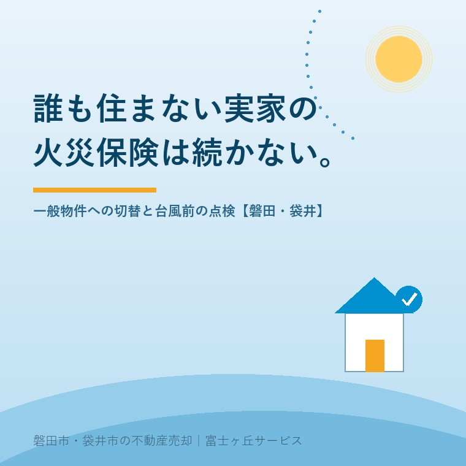

2026年8月17日｜カテゴリ：実家の管理／保険と備え

この記事の要点
Q. 母が施設に入って実家は空き家になりましたが、火災保険は親の代からのものが続いています。このままでいいのでしょうか。
A. そのままにしておくと、いざというときに保険金が出ない可能性があります。まず保険会社へ連絡してください。火災保険には専用住宅物件・併用住宅物件・一般物件・工場物件・倉庫物件という物件種別があり、誰も住んでいない建物は「住居として使用していない」ものとして、一般物件の扱いになることが多いからです。そして建物の構造・用法の変更は「通知事項」にあたります。日本損害保険協会は、故意または重大な過失によって遅滞なく通知を行わなかった場合には、契約が解除され、保険金が支払われない場合があると説明しています。掛け金を払い続けているのに、火事のときに出ない。これがいちばん怖い形です。あわせて、地震保険は財務省の説明どおり対象が「居住用の建物と家財」であるため、一般物件になると付けられなくなることがあります。台風の季節ですから、①保険会社へ現状を連絡 ②地震保険がどうなるか確認 ③今の状態を写真に残すの3つを、今月のうちに。磐田市・袋井市・森町では、介護施設の運営から不動産事業を始めた富士ヶ丘サービスのような「介護×不動産」専門の会社に相談するという選択肢があります。
実家の書類を整理していると、必ず出てくるものがあります。火災保険の証券です。
たいていは長期契約で、お父様かお母様の名前で、何十年も前に入ったまま。掛け金は口座から引き落とされ続けています。「保険は入っているから大丈夫」と、ご家族はおっしゃいます。
ですが、その保険は「人が住んでいる家」を前提に設計されています。誰も住まなくなった時点で、前提が崩れます。
今日は、空き家になった実家の火災保険をどうするかを整理します。以前空き家になった実家の火災保険の記事で全体像を書きましたが、今回は「一般物件への切り替え」という一点に絞って、詳しく書きます。制度は、2026年8月17日時点で財務省・日本損害保険協会・損害保険料率算出機構が公表している内容に沿います。
まず、あまり知られていない前提から。火災保険は、建物の使い道によって種類が分かれています。
損保ジャパンの説明では、火災保険には、専用住宅物件・併用住宅物件があり、それ以外に一般物件、工場物件、倉庫物件の物件種別がありますとされています。併用住宅とは、住居と住居以外の用途に併用される建物です。
| 物件種別 | どんな建物か |
|---|---|
| 専用住宅物件 | 住居のみに使う建物。普通のご実家はこれ |
| 併用住宅物件 | 住居と、それ以外の用途（店舗など）を兼ねる建物 |
| 一般物件 | 事務所・店舗など。空き家はここに入ることが多い |
| 工場物件・倉庫物件 | 工場、倉庫 |
ご実家が空き家になると、この表の一段目から三段目へ移る、というのが今日の話です。
ソニー損害保険の案内では、住宅として使用していない建物として空き家、テニスハウス、別荘などの用途で使用している場合が挙げられ、一時的に居住者が不在である場合や、建て替えの理由で一時的に空いている場合にも触れられています。
つまり、「空き家」という言葉で一律に決まるのではなく、実際にどう使われているかで見るということです。実務上、住宅物件のまま続けられるかどうかは、おおむね次のような点で判断が分かれます。
ここは、保険会社によって判断が違います。ですから「うちは大丈夫だろう」と自分で決めず、証券に書かれている連絡先へ電話して、現状を伝えてください。それが、この記事でいちばんお伝えしたいことです。
一般物件になると、保険料は上がるのが通例です。ですが、本当に怖いのはそこではありません。
日本損害保険協会は、火災保険の告知事項として建物の構造・用法、建物の所在地、他の火災保険契約等の情報を挙げ、契約後の通知事項として建物の構造・用法の変更を挙げています。そして、次のように説明しています。
故意または重大な過失によって遅滞なく通知を行わなかった場合には、契約が解除され、保険金が支払われない場合がありますので、注意が必要です。
これが、放置のいちばんの危険です。
掛け金は毎年引き落とされている。証券もある。ところが火事が起きて請求したら、「住んでいないことを聞いていない」と言われる。保険料を払い続けた年数が、まるごと無駄になりかねません。
しかも、火災保険は建物が全焼したときに、そのお金で解体費用まで賄えることがある制度です。空き家の解体費用は決して安くありません（実家の解体費用の記事にまとめました）。そこが空振りになると、ご家族に丸ごと負担が残ります。
「言ったら断られるのでは」と心配されるお気持ちは分かります。実際、空き家の引き受けを断る会社もあります。
ですが、黙っていても保険としては機能しません。払い続けているだけで、いざというときに使えない状態です。それなら、引き受けてくれる会社を探すほうが建設的です。
空き家を扱う商品を持っている会社はあります。一般物件として、あるいは空き家向けの商品として、引き受けてもらえる場合があります。まずは今の代理店に相談し、難しければ他社を当たってください。
もう一つ、静岡県にお住まいの方には見過ごせない論点があります。地震保険です。
財務省は地震保険制度について、地震保険の対象は居住用の建物（マンション共用部分を含む）と家財ですと説明し、対象外となるものとして工場や事務所専用建物などを挙げています。また地震保険は、火災保険に付帯する方式での契約となりますので、火災保険への加入が前提となりますとされています。
つまり、火災保険が一般物件になれば、地震保険が付けられなくなることがあるということです。
| 項目 | 財務省が説明している内容 |
|---|---|
| 対象 | 居住用の建物（マンション共用部分を含む）と家財 |
| 対象外の例 | 工場や事務所専用建物、30万円超の貴金属・宝石、通貨、有価証券、自動車など |
| 契約方式 | 火災保険に付帯する方式。契約期間の中途からでも加入できる |
| 保険金額 | 火災保険の保険金額の30％〜50％の範囲内。建物5,000万円・家財1,000万円が限度 |
| 損害区分 | 平成29年以降の契約では全損・大半損・小半損・一部損の4区分 |
磐田市・袋井市は、地震への備えを日常的に意識してきた地域です。ご自宅の地震保険は当然のように入っている、というご家庭が多い。それが、実家のほうだけ静かに外れていた──というのは、あとで知ると堪えます。
売るまでのあいだ、建物をどう守るか。ここは、売却の判断そのものにも関わってきます。「地震保険が付けられないなら、持ち続けるリスクが大きい」という理由で、売却を前倒しされたご家族もいらっしゃいます。
空き家の保険を考えるとき、「自分の家が燃えたとき」だけでなく「他人に損害を与えたとき」も見ておく必要があります。
まず前提として、失火の責任に関する法律（失火責任法）があります。この法律により、失火者に重大な過失がなければ、民法709条の不法行為責任は適用されないとされています。
これは両面あります。
ところが、火事以外は話が別です。
民法717条は土地の工作物責任を定めており、土地の工作物の設置または保存に瑕疵があることによって他人に損害を生じたときは、その工作物の占有者が賠償責任を負い、占有者が損害の発生を防止するのに必要な注意をしたときは、所有者が賠償しなければならないとされています。
台風で瓦が飛んで隣の車を壊した。ブロック塀が倒れて通行人が怪我をした。こうした場面で問われるのは、この工作物責任です。そして所有者の責任は、注意をしていたかどうかにかかわらず問われうる形になっています。
ここを補うのが、個人賠償責任の特約や施設賠償責任保険です。ご自宅の火災保険に付いている個人賠償責任特約が、空き家となった実家にまで及ぶとは限りません。「実家の分は、どの契約でカバーされているのか」を、証券を並べて確認してください。
8月から10月は、遠州にとって台風の季節です。空き家の点検そのものは台風前の空き家点検チェックリストの記事にまとめましたので、ここでは保険の目線でやっておくことを書きます。
これが最重要です。台風のあとに保険金を請求すると、必ず「その傷みは、いつからのものか」が問われます。経年劣化による傷みは、風災の対象になりません。
だから、台風が来る前の状態を撮っておく。屋根、瓦、雨樋、外壁、塀、カーポート、窓。日付が記録される形で、敷地の外からと中から。これがあるかないかで、話の通りやすさがまるで違います。
証券を出して、次の項目を見てください。
| 確認すること | 見るポイント |
|---|---|
| 風災の補償があるか | 古い契約では、風災に免責金額や損害額20万円以上といった条件が付いていることがある |
| 水災の補償があるか | 外していると、浸水・土砂災害が対象外。ハザードマップと合わせて見る |
| 免責金額（自己負担額） | 1回の事故につきいくら自己負担か |
| 建物の保険金額 | 何十年も前の金額のままだと、今の再建費用に届かないことがある |
| 家財の契約があるか | 家財を残したまま空き家にしている場合は要確認 |
なお、水災の保険料については、損害保険料率算出機構が2023年6月、火災保険参考純率を全国平均で13.0％引き上げ、あわせて水災料率を地域のリスクに応じて5区分に細分化する届出を行い、その後各社の商品に反映されています。お住まいの地域のリスクが、そのまま保険料に反映される時代になったということです。ハザードと売却の関係はハザードマップと実家の売却の記事に書きました。
意外に知られていませんが、保険金の請求には期限があります。保険法95条により、保険給付を請求する権利は、これを行使することができる時から3年間行使しないときは、時効によって消滅するとされています。
空き家では、被害に気づくのが遅れます。去年の台風で瓦がずれていたのに、今年になって初めて見た──ということが起きます。3年という数字を覚えておいて、心当たりがあれば早めに保険会社へ相談してください。すでに修理を終えていても、期限内であれば請求できる場合があります。
地域の話を書きます。
この地域のご実家は、瓦屋根で、平屋か2階建て、敷地が広く、塀とカーポートがあるという形が多い。そして、その全部が工作物です。台風で動くものが、家の周りにたくさんあるということでもあります。
実際にご相談が増えるのは、台風の翌週です。「隣の方から、瓦が落ちていると連絡があった」というものです。離れて暮らすご家族は、まず現地の状況が分かりません。そこから、保険はどうなっていたか、証券はどこにあるか、と遡ることになります。
その順番を、台風の前に済ませておきたいのです。
また、電気と水道を止めているお宅では、点検そのものが難しくなります。夜間に見に行けない、水で流せない。閉栓の判断については酷暑の夏の閉栓と内覧の記事で書きました。保険と閉栓は、別々に考えられがちですが、どちらも「管理されている状態かどうか」という一点でつながっています。
そして、売る予定があるなら、保険をどこまで手厚くするかは期間の問題になります。年内に引き渡せるなら、一年契約で足りる。数年かかるなら、しっかり組み直したほうがよい。売却の期限がある場合の逆算は3,000万円控除の二つの期限の記事にまとめました。
6番を忘れないでください。契約者が故人のままだと、保険金の請求時に相続の書類が必要になり、支払いまで時間がかかります。相続登記と一緒に片づけるのが効率的です。
当社は、磐田市見付で介護施設を運営するところから不動産の仕事を始めました。ご相談の入口は、たいてい「親が施設に入った」「親を看取った」です。
施設への入居が決まった日から、実家は空き家になります。ご家族は、入居の手続き、介護の段取り、費用の見通しで手一杯です。保険のことまで頭が回らないのは、当たり前だと思います。
だから私たちは、ご相談をお受けしたとき、売却の話より先に「保険はどうなっていますか」とお尋ねすることがあります。売るかどうかは、まだ決めなくていい。けれど、決めるまでのあいだも建物は建っていて、台風は来ます。
目指しているのは「高く売る」だけではなく、「家族が困らない売却」です。売れるまでの期間を、無防備にしない。それも仲介の役目だと考えています。
価格の前に事実を整理する道具として、ふじがおか実家カルテを用意しています。実家じまいそのもののご相談は実家じまい相談室へどうぞ。
保険の話は、地味で、後回しになりがちです。けれど、実家が空き家である期間は、ご家族が思っているより長くなります。その間ずっと、建物は雨風の中に立っています。
まずは、火災保険の証券と、固定資産税の通知書をご用意ください。それだけで、確認の順番を一枚にしてお渡しできます。
ふじがおか実家カルテ｜空き家のあいだの備えもご相談ください
売れるまでの期間を、無防備にしない。
住所をもとに、建物の状態、想定される売却期間、名義と相続登記、ハザードの区分、台風前に確認すべき箇所を整理し、次に何をすべきかを1枚にしてお出しします。作成料0円・入力約1分。申込みだけで売却依頼にはなりません。
本記事は2026年8月17日時点で財務省・日本損害保険協会・損害保険料率算出機構および各損害保険会社が公表している情報に基づく一般的な解説であり、個別の保険契約についての判断を示すものではありません。物件種別の判定、空き家の引受可否、地震保険を付帯できるかどうか、補償の範囲、免責金額、保険料は、保険会社および商品・約款によって異なります。必ずご契約の保険会社または代理店へご確認ください。保険金が支払われるかどうかは、約款の定めと個別の事故の事情によって判断されます。失火責任法および民法717条に関する記述は一般的な説明であり、具体的な事案における責任の有無や範囲は弁護士へご相談ください。保険金請求の時効については、保険法の規定とは別に保険会社が独自の取扱いを定めている場合があります。相続登記は司法書士へ、税務の取扱いは税理士へご確認ください。個別のご相談は当社までどうぞ。

この記事を書いた人：大石浩之（宅地建物取引士）
磐田市・袋井市・森町で「介護×相続×空き家」に特化した不動産売却支援を行う富士ヶ丘サービスの代表取締役・宅地建物取引士。介護施設の運営から不動産事業を始めた経験をもとに、売主とご家族が困らない売却を一件ずつお手伝いしています。プロフィール
磐田市・袋井市・森町の実家じまい・相続空き家相談
固定資産税通知書だけでも相談できます
住所があいまいでも、通知書や写真から名義・道路・農地・残置物の確認順を整理します。カルテ申込またはLINEで状況を送ってください。
富士ヶ丘サービス株式会社／静岡県磐田市見付5789番地1／TEL:0538-31-3308／静岡県知事 (2) 第14083号／代表取締役・宅地建物取引士 大石 浩之